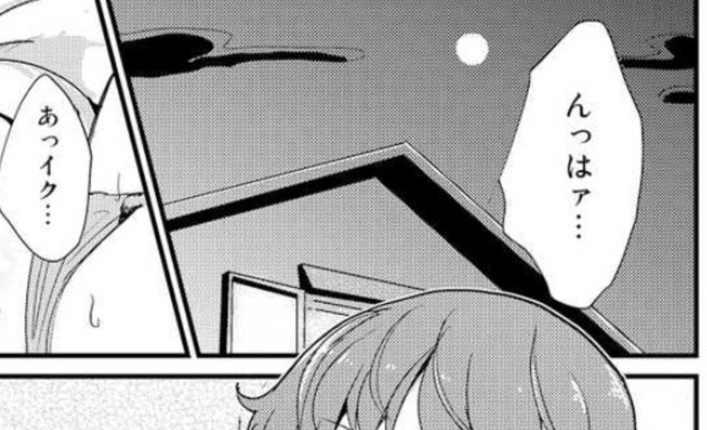

| 拍 | 音素 | 音価 |
|---|
| 母音 | V |
/a/ | [ɐ] | [ː] |
|---|
| /i/ | [i] |
| /u/ | [ɯ̟ᵝ][ɨᵝ] |
| /e/ | [e̞] |
| /o/ | [o̞͑] |
| 半母音 | S/C |
/j/ | [j][ʲ] |
|---|
| /w/ | [β̞][ʷ] |
| 子音 | C |
(/ʔ/) | [ʔ] |
|---|
| /k/ | /kj/ | [k] | [kʲ] |
| /s/ | /sj/ | [s] | [ɕ] |
| /t/ | /tj/ | [t][ʦ] | [ʨ] |
| /n/ | /nj/ | [n] | [ɲ][nʲ] |
| /h/ | /hj/ | [h][ɸ] | [ç][hʲ] |
| /m/ | /mj/ | [m] | [mʲ] |
| /r/ | /rj/ | [ɾ]* | [ɾʲ]* |
| /g/ | /gj/ | [ɡ]* | [ɡʲ]* |
| /z/ | /zj/ | [ʣ] | [ʥ] |
| /d/ | [d]* |
| /b/ | /bj/ | [b] | [bʲ] |
| /p/ | /pj/ | [p][ɸ] | [pʲ] |
| 特殊拍 |
長音 | R | /R/* | [ː] |
|---|
| 撥音 | N | /N/ | [̃n][̃m][̃ŋ][̃ɴ][̃ː] |
|---|
| 促音 | Q | /Q/* | [k̚][t̚][p̚][s][ɕ]* |
|---|
Tab xx 主要音韻一覧（*表示還有其他変種）
母音
| \ | F1(dHz) | F2(kHz) | F3(kHz) |
|---|
| a | 50-90 | 1.0-1.6 | 2.1-2.8 |
|---|
| i | 25-40 | 2.2-3.0 | 2.5-3.5 |
|---|
| u | 35-60 | 1.2-1.7 | 2.0-2.5 |
|---|
| e | 40-70 | 1.6-2.2 | 2.4-2.7 |
|---|
| o | 40-60 | 0.5-1.2 | 2.1-2.8 |
|---|
/V/日本語的母音位有５個。/a/為非円唇中舌次広母音[ɐ]。/i/為非円唇前舌狭母音[i]、略比/u/更狭。/u/為斂唇次後舌狭母音[ɯ̟ᵝ]外還存在１個較大的変種。/e/為非円唇前舌中央母音[e̞]。/o/為弱円唇後舌中央母音[o̞͑]。周囲(画面不大会布局到下方)付有５個母音位大致的前三個共振峰範囲和以此範囲対応的IPA母音座標。左側三角為其簡化図。那些数値只是算個参考、図表也是相対的、以後有機会去自己測値
(硬)口蓋化(palatalization)会在調音的同時舌面接近硬口蓋。
/i/前同拍子音除[ʔ]在非洋語中都会口蓋化。其中歯的(破)擦的[s][ʦ][(d)z]以口蓋音変種[ɕ][ʨ][(d)ʑ]；[n][h]可以口蓋音変種[ɲ][ç]也可以口蓋化変種[nʲ][hʲ]；其他皆以口蓋化変種。在音素中可不表記出。
中舌寄り(centralized)会使母音中舌化。弱めの円唇(less rounded)会減弱円唇程度。
/u/非洋語中/t/以摩擦的変種[ʦ]；/h/以両唇的変種[ɸ]分布於該母音的前面。在歯的破(擦)的[s][ʦ][(d)z]後分布会以中舌化変種[ɯ̟̈ᵝ]、也可用[ɨᵝ]表記。
無声化(voiceless)会将音的[voice]素性為陰性。
/V[+high]/低揚音的高母音挟於無声子音間(/C-vV̀+hC-v/)或在文末時該母音会無声化、属於母音強化。其他母音或挟於有声音的也存在此現象、其中母音越低傾向越低。当音拍反復時後項傾向不同化。有個人差。
/sikemasu/ [ɕi̥ke̞mɐsɨ̥ᵝ] /takutte/ [tɐkɯ̟̥ᵝt̚te̞]
/kokoro/ [ko̞̥͑ko̞͑ɾo̞͑] /katana/ [kɐ̥tɐnɐ]
子音
位/法 | 両唇 | 歯茎 | 歯茎
硬蓋 | 硬蓋 | 軟蓋 | 蓋垂 | 声門 |
|---|
| 破裂 | p b | t d | | | k ɡ | | ʔ |
|---|
| 鼻 | m | n | | ɲ | ŋ | ɴ | |
|---|
| 震 | | r | | | | | |
|---|
| 弾 | | ɾ | | | | | |
|---|
| 摩擦 | ɸ β | s z | ɕ ʑ | ç | ɣ | | h |
|---|
| 接近 | β̞ | | | j | | | |
|---|
| 破擦 | | ʦ ʣ | ʨ ʥ | | | | |
|---|
| 側弾 | | ɺ | | | | | |
|---|
| 側接 | | l | | | | | |
|---|
Tab xx 日本語子音音韻一覧（B表示主要的変種、I表示有口蓋化的変種）
日本語的子音位中直音位(子音)加上零位的/ʔ/共13個、拗音位共11(和漢)+20(洋)＝31個。
/ʔ/会挿入在作為語頭的母音前、也会挿入在被強調的語末後。
/aQ/[ʔɐʔ] /hueQ/[ɸɯ̟ᵝe̞ʔ]
/Cj/除/i/的口蓋化外、其他母音都可使前接子音口蓋化為開拗音。
/wja k(j)i wju kje wjo/ [β̞ʲɐ kʲi β̞ʲɯ̟ᵝ kʲe̞ β̞ʲo̞͑]
唇音化(labialization)会在調音的同時両唇接近成円唇。
/Cw/外来語中可以将前接子音唇音化為合拗音。現已不再使用。
/kwa kwi kwu kwe kwo/ [kʷɐ kʷi kʷɯ̟ᵝ kʷe̞ kʷo̞͑]
[+plosive,-voice]無声破裂的/k/,/t/,/p/在語頭為弱有気的変種[kʰ][tʰ][pʰ]、其他分布下為無気変種[k˭][t˭][p˭]。
/takai/[tʰɐkɐi] /anata/[ɐnɐt˭ɐ]
/g/在語頭学校(ガッコウ)、弱結合複合語専門学校(センモンガッコウ)、同音反復的語ガラガラ、洋語窓ガラス、名字日本銀行(ニッポンギンコウ)、接｢御｣お元気(オゲンキ)、不成名称的｢五｣十五(ジュウゴ)以変種[ɡ]；其他在東日本方言中可以鼻音的変種[ŋ]小学校(ショウカ゚ッコウ)、十五夜(ジュウコ゚ヤ)、雨傘(アマカ゚サ)称鼻濁音現衰退中。有個人差。
/z/在語頭和/N/後以破擦変種[ʣ]、其他以摩擦変種[z]。或両者互為自由変異不過後者変種我没感受到。有個人差。
/d/在非洋語中其高母音及口蓋化的/dja/ /di/ /du/ /dju/ /djo/音価与/zja/ /zi/ /zu/ /zju/ /zjo/一致。
/r/通常認為是歯茎弾音[ɾ]、也有其側面音的自由変種[ɺ]、在/N/後有側接的変種[l]、在卑語中有震音変種[r]。有個人差。
特殊拍
/R/位於母音後将其向後延長、和前一個母音共同構成長母音。/ou/和/ei/会同化成長母音/oː/和/eː/。在一語的相同母音接続時、該母音接続会成為長母音。
/aR/ /aː/：/kaasan/ /kaːsan/
/iR/ /iː/：/ziRsan/ /ziːsan/
/uR/ /uː/：/suRnin/ /suːnin/
/eR/ /eː/：/neRsan/ /neːsan/ /keisan/ /keːsan/
/oR/ /oː/：/dousan/ /doːsan/ /oRi/ /oːi/
/ei/和在清晰的発話時、単字音読和一語訓読非送り仮名会保持長母音、其余会成為母音接続。
"iikata" /i.ikata/
"siteiru" /site.iru/
/Q/伝統上位於無声音前、在外来語中還会位于破・擦的有声音前。会将後続第一個子音的第一個成分向前延長。和後一個子音共同構成長子音。当為/ktp|gdz/破(擦)系列時以内破化延伸、還会在/bhr/前只用於名字、発音方式或許也是内破；当為/s|ɸ/摩擦系列時延該摩擦。語頭文末可実現為[ʔ]、歌唱可実現為[ː]。也可用延伸的音素表示。
/korekkya/ [
ko̞͑ɾe̞k̚kʲɐ] /hyugge/ [
çɯ̟ᵝg̚ge̞]
/mittu/ [
mʲit̚tɯ̟ᵝ] /beddo/ [
be̞d̚do̞͑]
/kappu/ [
kɐp̚pɯ̟ᵝ] /sutahhu/ [
sɯ̟ᵝtɐɸːɯ̟ᵝ]
/zassi/ [
ʣɐɕːi] /bazzi/ [
bɐd̚ʥi]
絆はずっと
[~ʣʣɯ̟ᵝto̞͑]▶繋がってる
[~gɐɐte̞ɾɯ̟ᵝ]▶まっすぐな瞳
[mɐːsɯ̟ᵝ~]▶『不規則性エントロピー』/N/伝統上位於有声音前、在派生形態素接続和外来語中還会位於無声音前。会随後続第一個子音的第一個成分(＝環境)而有不同変種（可視為一種向前延長）、並将前接的母音鼻音化。鼻破中/t|dn/歯茎系列為[n]、/p|bm/両唇系列[m]、/k|g/口蓋系列為[ŋ]。其他為鼻母音的延伸、文末為[ɴ]。歌唱可実現為[m]。
/naNda/ [nɐ̃ndɐ] /miNna/ [mʲĩnnɐ] /aNta/ [ɐ̃ntɐ]
/zeNbu/ [ʣẽ̞mbɯ̟ᵝ] /saNmi/ [sɐ̃mmʲi] /haNpa/ [hɐ̃mpɐ]
/geNgo/ [gẽ̞ŋgo̞͑] /naNka/ [nɐ̃ŋkɐ]
/daNsu/ [dɐ̃ːsɯ̟̥ᵝ] /koNja/ [ko̞͑̃ːjɐ] /koNwa/ [ko̞͑̃ːβ̞ɐ] /zeNra/ [ʣẽ̞ːɾɐ]
/hen/ [hẽ̞ɴ] /N⤴/ [ɴ˨˦]
特別な場面 [~bɐme̞ɴ] 『不規則性エントロピー』
特殊拍特殊拍是時間長度為１拍的子音、不与後続母音成為１拍。其中/Q/与/N/互補、即不能連続（唯一例外｢ロンドンっ子｣）。独立度N>Q>R、N有独立自由的音価[ɴ]、Q的独立音価[ʔ]是拘束的、R只拘束於V。特殊拍不能成為揚音的核。
拍
拍(mora)係有固定時間長度的音的分節単位。標準日本語的拍有如下組合、計232個。除特殊拍(special mora)外其他為自立拍(independent mora)。
- Q ：促音（共１個）
- N ：撥音（共１個）
- R ：長音（共５個）
- V ：母音（共５個）
- CV ：直音(-撥音&母音)（共15*5-5-5＝65個(無撥音＆母音)）
- CSV：拗音（共12*3+119＝155個）
五十音係伝統和語的音拍。９子音加１零位組以５母音計5*10個拍。其中/yi,ye,wi,wu,we/在現代子音已脱落為/i,e,i,u,e/、可和母音的/i,u,e/視為同一拍、故五十音計50-5共45拍。非伝統的外来語音拍見次章的仮名一覧。
∑Gojūon={VGojūon , CV*Gojūon} (CGojūon={k,s,t,n,h,m,y,r,w},VGojūon={a,i,u,e,o})
ｋ←→ｇ
ｓ←→ｚ
ｔ←→ｄ
ｐ←→ｈ←→ｂ
直音係不含非/i/前硬口蓋化(Cʲ!i)・唇音化(Cʷ)的CV組合、還包括V、N和在V後的R。与拗音相対。拗音係含非/i/前硬口蓋化(Cʲ!i)・唇音化(Cʷ)的CSV組合。清音係非濁音的拍、但不包括特殊拍的撥音和促音。濁音与部分清音対立。対立如右。一般清濁的対立是無有声的対立、而/h/的対立是因[p]的唇音退化。半濁音係/F/在平安時代回帰的音、現為/p/与/h/対立。
子音連結,子音群(consonant cluster)係不含母音的連続的音集団。日本語中存在於/R/和/Q/続/CV/中、因為這２種音素会被後続子音同化、具有共同的特征、故還可称為長子音(gemination)。
母音接続,連母音(hiatus)係不含子音的連続的音集団、母音間還可挿入音節境界。二重母音(diphthong)在母音的連続中有平滑的過渡、並会有其中一個母音的聞こえ度降低、用音節副音表示。２個母音聴感為一個音節。日本語中不同的非高母音与高母音連続時在会話中易成為二重母音。長母音係持続時間長的母音、日本語中長母音占２拍時間長度。
音素配列論(phonotactics)係分析音配列規則性的分野。日本語的音素配列規則如下。

- 子音群不会超過２個音素。（*QNna）
※方言・洋名称・感動詞有。
- 文頭不出現子音群。（*ssika~）
※感動詞会有。（Qtaku）
- 特殊拍不能連続。（*QNR）
※其中Q還不在ʔ,n,m,y,w前。
※感動有。(/skkki/ /saRkki/ /taRNbini/▶)
- 不曾存在/yi/和/wu/的音価。
- 和語中無以ru,N打頭的形態素。
- 子音群的第一個音素受第二个音素限制（kk,*tk）
- 一個和語形態素只有１個濁音（kagami,*gaga）
揚音
弁別蠇ヲ/kaꜜkio/ 垣ヲ/kakiꜜo/ 柿ヲ/kakio/
統語ニワニワニワトリガイル「二羽庭には鳥が居る」
ニワニワニワトリガイル「庭には二羽鳥が居る」
ニワニワニワトリガイル「庭には鶏が居る」
すもももももももものうち「李も桃も桃の内」
アクセント,揚音(accents)係単語或接続在社会慣習上音相対的強弱或高低配置、有着弁別(同音異揚)・統語(文節境界)機能。高低アクセント(pitch-accent)係語中音節或拍的音高配置。日本語大部分為高低揚音、在不同方言常会有不同揚音。回文的「赤坂/akasaka/」的逆読不再是｢赤坂｣、因為/akaꜜsaka/已是/akasaꜜka/、不為同一語。
たしがわたしが
わ
| 平頭
平 |
み
ど たしが
りがわ |
たしが とこ
わ お
が | 平頭
尾 |
み とこ
ど お
りが が |
たしが か
わ お
しが | 平頭
中 |
み か
ど お
りが しが |
たしがみ
わ ど
りが | 平頭
頭 |
み み
ど ど
りが りが |
とこ
お たしが
がわ | 尾中
平 |
か
お たしが
しがわ |
とこ
お とこが
がお | 尾中
尾 |
か
お とこ
しがお が |
とこ
お か
がお しが | 尾中
中 |
か
お か
しがお しが |
とこ み
お ど
が りが | 尾中
頭 |
か み
お ど
しが りが |
Tab xx
/wātásígá/ /ōtókógà/ /ōkásȉgà/ /mídōrìgà/
Ｈ˦| たしが│ とこ │ か │み
Ｍ˧|わ │お │お │ ど
Ｌ˨| │ が│ しが│ りが
段 平板型 尾高型 中高型 頭高型
一般的日本語的高低揚音有三個相対的音高(pitch)(単位:mel)。連続的音的音高的相対変化有上昇(˧˦)・下降(˧˨)・急上昇(˨˦)・急下降(˦˨)、非急的変化会発生１個音高的変化、急則会発生２個音高的変化。上昇発生於文節中的非核頭拍的後一拍；下降発生於①平板型文節後的非平板型的非核頭拍②頭高型的第二三拍；急上昇発生於頭高型文節後的頭高型文節第一拍；急下降発生於平板型後起伏式的核後一拍…。
五度 | A | B | 名称 |
|---|
| 55 | a̋ | a˥ | 声調超高 |
| 44 | á | a˦ | 声調高 |
| 33 | ā | a˧ | 声調中 |
| 22 | à | a˨ | 声調低 |
| 11 | ȁ | a˩ | 声調超低 |
Tab xx
在各揚音型接続時、平板型接平板式頭拍不会下降；平板型接起伏式頭拍不会上昇。核在頭拍以２個拍的長度緩降；核不在頭拍(急)下降。也可以通過標記上昇了的拍表記揚音、並把最後一個上昇的拍称為核。単独付属語無確定的揚音、部分還会改変整個文節的核、故揚音的単位為文節。一般的一個文節会有一個確定的揚音型、因為一個文節的前二拍的音高不会相同、所以若文節是已知的、上昇也会是已知的；因為核是将要発生下降的拍、所以若核能確定下降也会被確定。
| 語 | 音素 | 音価(簡) | 核表記法 | 二段観 |
|---|
| 蠇ヲ | /ꜛkaꜜkio/ | [kákìò] | カ\キヲ | カ | ① | -３ | ●〇〇 | HLL | ┌ka┐kio | カキヲ | カキヲ |
|---|
| 垣ヲ | /kaꜛkiꜜo/ | [kàkíò] | カキ\ヲ | キ | ② | -２ | 〇●〇 | LHL | ka┌ki┐o | カキヲ | カキヲ |
|---|
| 柿ヲ | /kaꜛkio/ | [kàkíó] | カキヲ‾ | ０ | ⓪ | ０ | 〇●● | LHH | ka┌kio | カキヲ | カキヲ |
|---|
Tab xx 一部アクセント的表記
| 型＼拍 | 一拍語 | 二拍語 | 三拍語 | 四拍語 | 五拍語 | 揚音 |
|---|
| 平板式 | 平板型 | ヒガ
日が | ミズガ
水が | ワタシガ
私が | トモタチガ
友達が | アカンボーガ
赤んぼが | ０
⓪ |
|---|
| 起伏式 | 尾高型 | |
ハナガ
花が② |
オトコガ
男が③ |
イモートガ
妹が④ |
オショーガツガ
お正月が⑤ | -１ |
|---|
| 中高型 | | | オカシガ
お菓子が | アマガサガ
雨傘が | ニワカアメガ
俄雨が | -２ |
|---|
| | | ドヨービガ
土曜日が | バンゴハンガ
晩御飯が | -３ |
| | | オジョーサマガ
お嬢様が | -４ | |
| 頭高型 | ヒガ
火が | アメガ
雨が | ミドリガ
緑が | ネーサンガ
姉さんが | オツキサマガ
お月様が | -Ｎ
① |
|---|
Tab xx 五拍内アクセント一覧
用羅馬字表記揚音可用「⎾⏋」挟於相対較高的揚音部分、如「垣ヲ ka⎾gi⏋wo」、其中｢⎾｣称上がり目・｢⏋｣称下がり目,滝、滝的前一拍称核。自立語中上がり目是一定存在的、而下がり目可以不存在。無滝会将高揚音延長到下一上がり目。無滝為平板式有滝為起伏式。用数字表記揚音時核的正序以｢〇｣・倒序以｢-｣・無核以｢０｣表記。頭高型只有第一拍高；平板型和尾高型只有第一拍低、但尾高型有滝故不能将高揚音継続下去。中高型由第二拍高到滝。通過標記核来表記揚音的方法称核表記法；通過標記高揚音来表記揚音的方法称二段観（二段是因為可用２段来表記如下、但不一定必須為２段）、此外若標記出声調高・低之外還標記出声調中的表記称三段観。
ワニ ニ リガイル｜ ワニ ニ リガイル
｜ニ ワト
ニ ワ ワト ｜ ワ
庭 には二羽 鳥 が居る｜◑●●◯●◑◑●●●●
一拍語有平板・頭高計２型、二拍語加以尾高計３型、三拍以上語中高型豊富起来、故Ｎ拍語計N+1種揚音型。
卓立
声調